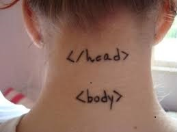

Oque é html?
começando pela principal tag html ela informa ao navegador que estrutura ele vai usar
Para que serve a tag body?
Tag body define a estrutura do documento tudo que estiver na pasta body vai ser apresentado na pagina

E a tag P?
A tag "P" e usada para definir paragrafos dentro do site
Tag pre
A tag pre e usada para representar o texto pre-formatado e determina o conteudo que aparece na pagina
As tags
As tags h1, h2, h3, ate a h6 servem para o tamanho da fonte h1 uma fonte maior, h6 uma menor
Tag span
A tag span ele tem o objetivo de agrupar ou delimitar elementos a nivel da linha
Tag Div
A tag Div e usada como conteiner para outros elementos que facilita a estilizaçao de blocos
Seletor Css
É o seletor mais abrangente da CSS, ele casa com todos os elementos encontrados. Os estilos abaixo irão refletir em todos o elementos p e h1 da página. E se você quise-se utilizar uma mesma regra para um determinado grupo de tags HTML ? Você poderia utilizar o agrupamento de seletores.
Como o CSS representa um seletor de classe?
O seletor de classe deve ser usado quando muitos elementos compartilham do estilo definido na regra. Por exemplo, se queremos alterar todos os parágrafos em uma página utilizamos o seletor de classe. O seletor de id deve ser utilizado quando apenas um elemento deve receber o estilo definido na regra.
Seletor Id css
Sintaxe Em um documento HTML, os seletores de ID do CSS selecionam um elemento baseado no conteúdo de seu atributo id, o qual deve ser exatamente igual ao valor dado ao seletor.
#valor_id { propriedades de estilo }